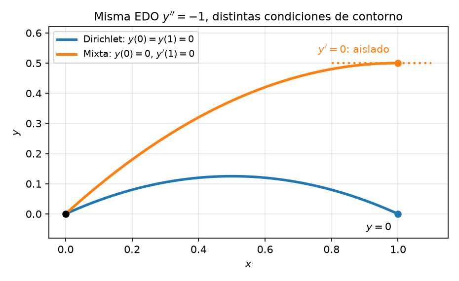

En general, el comportamiento de un sistema no lo gobierna solo la ecuación diferencial, sino también las condiciones de contorno impuestas en los límites del dominio (\(x = a\) y \(x = b\)). Estas condiciones especifican cómo interactúa la variable de estado \(y\) con su entorno en los bordes.
Forma unificada. Toda condición de contorno lineal en un extremo puede escribirse como
\[\boxed{c_1\,y + c_2\,y' = \gamma}\]
donde \(c_1\), \(c_2\) y \(\gamma\) son constantes. La condición de contorno es una ecuación por cada extremo. La solución debe cumplir la EDO en todo el dominio y, además, esta ecuación puntual en cada borde. Si \(\gamma = 0\) la condición es homogénea (no fija ningún valor) y no homogénea en caso contrario. Los tres tipos clásicos son simplemente elecciones especiales del par \((c_1, c_2)\):
| Tipo | Coeficientes | Condición | Qué se fija | Analogía del calor |
|---|---|---|---|---|
| Dirichlet | \((1,\, 0)\) | \(y = \gamma\) | el valor de \(y\) | temperatura fija |
| Neumann | \((0,\, 1)\) | \(y' = \gamma\) | la derivada (flujo) de \(y\) | flujo fijo (aislado si \(\gamma = 0\)) |
| Robin | \((c_1,\, c_2)\) general | \(c_1 y + c_2 y' = \gamma\) | una combinación lineal | enfriamiento convectivo |
Una condición mixta no es una cuarta elección de coeficientes — significa que se aplican tipos distintos en extremos distintos (p. ej. Dirichlet en \(x=a\), Neumann en \(x=b\)). La terminología habla de dónde se sitúa cada condición, no de una nueva forma algebraica.
El orden de una ecuación diferencial dicta cuántas condiciones se necesitan para fijar una solución concreta, y eso determina directamente si el problema forma un PVI (problema de valor inicial, todas las condiciones en un punto) o un PVF (problema de valores de frontera, condiciones sobre los bordes del dominio).
Regla de conteo. Una EDO de orden \(n\) necesita \(n\) condiciones independientes para determinar sus \(n\) constantes de integración. Pueden darse en un punto o repartirse entre varios — en una EDO de 3er orden, por ejemplo, las tres en un punto (PVI) o dos en \(x=a\) y una en \(x=b\) (PVF) — aunque el conteo por sí solo no garantiza existencia ni unicidad. El disparo y el MDF se generalizan en consecuencia.
Una constante \(C\), una condición necesaria.
\[y' + p(x)y = r(x), \quad y(x_0) = y_0\]
Esto hace que las ecuaciones de 1er orden sean casi exclusivamente PVI. Intentar imponer dos condiciones de contorno — como \(y(a) = \alpha\) e \(y(b) = \beta\) — a una única EDO de 1er orden crea un sistema sobredeterminado y salvo que esos dos puntos caigan casualmente sobre la misma curva integral, no existe solución.
Un sistema de EDO de 1er orden, en cambio, sí puede repartir condiciones entre bordes (p. ej. \(y_1(a) = \alpha\) e \(y_2(b) = \beta\)); y una única EDO de 1er orden admite un PVF solo si la condición vincula ambos extremos, como la periódica \(y(a) = y(b)\).
Dos constantes \(C_1, C_2\), dos condiciones necesarias.
\[y'' + p(x)y' + q(x)y = r(x), \quad y(x_0) = y_0, \quad y'(x_0) = v_0\]
Ejemplo: movimiento parabólico — conoces dónde está la pelota en \(t = 0\) (\(y_0\)) y con qué velocidad se lanza (\(v_0\)).
\[y'' + p(x)y' + q(x)y = r(x), \quad y(a) = \alpha, \quad y(b) = \beta\]
Ejemplo: flexión de una viga — conoces la altura de la viga en el apoyo izquierdo (\(\alpha\)) y en el derecho (\(\beta\)).
Para ver cómo el tipo de condición de contorno cambia la respuesta, usamos una EDO trivialmente resoluble, \(y'' = -1\). Esta ecuación describe la temperatura en estado estacionario (no cambia en el tiempo) \(y(x)\) de una barra metálica que genera calor uniformemente en su interior, es decir, la ecuación de Poisson en una dimensión, la misma que reaparece en 2D en Elípticas. Integrando dos veces se obtiene la solución general \(y(x) = -\tfrac{1}{2}x^2 + C_1 x + C_2\). Las condiciones de contorno fijan por completo las constantes:
| Condiciones de contorno | Constantes | Solución | Interpretación |
|---|---|---|---|
| \(y(0) = 0,\; y(1) = 0\) (Dirichlet) | \(C_2 = 0,\; C_1 = \tfrac{1}{2}\) | \(y = \tfrac{1}{2}x(1-x)\) | ambos extremos a temperatura fija, el calor sale por los dos, arco simétrico |
| \(y(0) = 0,\; y'(1) = 0\) (mixta) | \(C_2 = 0,\; C_1 = 1\) | \(y = x - \tfrac{x^2}{2}\) | extremo derecho aislado, el calor solo sale por la izquierda, la barra queda más caliente |
| \(y'(0) = 0,\; y'(1) = 0\) (Neumann) | \(C_1 = 0\), luego \(y'(1) = -1 \neq 0\) | no hay solución | ambos extremos aislados: la fuente calienta sin poder evacuar |
La tercera fila muestra que contar dos condiciones no basta: de \(y'=-x+C_1\), el borde izquierdo exige \(C_1=0\) y el derecho exigiría \(C_1=1\). Físicamente, la fuente genera calor que no puede salir por ningún extremo aislado, así que no existe estado estacionario. En general, las condiciones de Neumann en ambos extremos requieren una condición de compatibilidad, el calor generado debe igualar el flujo que sale, si se cumple, la solución queda determinada salvo una constante (por ejemplo, \(y''=0\) admite cualquier \(y=C\)).

Comprueba tu comprensión. Manteniendo el extremo izquierdo aislado (\(y'(0) = 0\)), ¿qué condición en \(x = 1\) sí produciría solución? ¿Qué valor del flujo saliente equilibraría a la fuente?
Este es un apunte de métodos numéricos, así que la recompensa está en cómo entra cada tipo de condición en los métodos. La misma forma unificada \(c_1 y + c_2 y' = \gamma\) aparece tanto en el residuo del disparo como en la matriz del MDF.
En el método del disparo se adivina la pendiente desconocida \(s\), se integra el PVI hasta \(x = b\) y se busca la raíz del residuo \(F(s)\). La forma de \(F(s)\) depende de la condición en \(x = b\):
| Condición en \(x = b\) | Residuo \(F(s)\) cuya raíz se busca |
|---|---|
| Dirichlet \(y(b) = \beta\) | \(u_1(b; s) - \beta\) |
| Neumann \(y'(b) = \beta\) | \(u_2(b; s) - \beta\) |
| Robin \(c_1 y(b) + c_2 y'(b) = \gamma\) | \(c_1\,u_1(b; s) + c_2\,u_2(b; s) - \gamma\) |
donde \(u_1 = y\) y \(u_2 = y'\) son las variables del sistema de primer orden. La condición en \(x = a\) va incorporada a la condición inicial del PVI; la de \(x = b\) define \(F(s)\). Las condiciones de Robin no son más difíciles que las de Dirichlet — solo una combinación lineal distinta de los mismos dos valores en el extremo.
En el MDF una condición Dirichlet ya da el valor del borde, así que no entra como incógnita y solo aparece como dato en el lado derecho del sistema. Con Neumann o Robin el valor del borde es desconocido, de modo que se suma una incógnita y una ecuación extra a la matriz (los detalles, con el nodo fantasma, en PVF).
| Rasgo | Problema de Valor Inicial (PVI) | Problema de Valores de Frontera (PVF) |
|---|---|---|
| Ubicación de las condiciones | Todas en un punto (\(x = a\)) | Repartidas entre varios puntos (\(x = a\) y \(x = b\)) |
| Contexto físico | Dinámica temporal / evolutiva (movimiento, decaimiento, órbitas) | Estados espaciales / de equilibrio (distribución de calor, modos de onda) |
| Resolubilidad | Casi siempre da solución única | Puede tener 0, 1 o infinitas soluciones |
| Enfoque numérico | Marcha hacia adelante paso a paso (Euler, RK4) | Disparo o sistema global MDF |
Las mismas tres condiciones reaparecen en las EDP, ahora aplicadas sobre los bordes del dominio espacial. Allí el borde ya no es un punto sino una curva, y el dato es una función entera sobre él, como la temperatura del borde de la placa en Elípticas o el contorno de la difusión en Parabólicas.